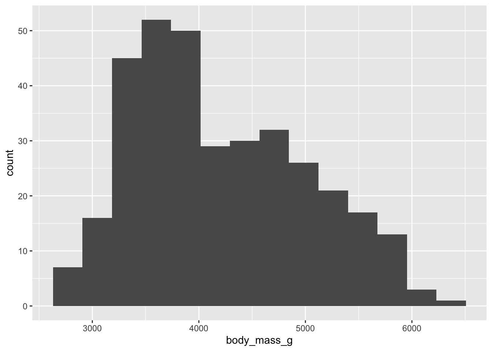

# this is a code chunk!0. Getting oriented
This is a Quarto document. It allows you to write in plain text and code at the same time. If you have used RMarkdown before, this is a similar concept.
a. Formatting
You can format your document with headers, italics and bold text, and color.
You can insert code chunks using Command (or Control) + Shift + I.
You can also adjust code chunk options using the options listed here inside of the {r} curly brackets. For example, if I want to run code but not display it, the option is echo = FALSE.
[1] 11In contrast, if I want to display code but not run it, the option is eval = FALSE.
2 + 5Putting text and code together makes writing documents very streamlined. You can do all your analysis and write about it in the same document.
b. Rendering
The right-pointing arrow at the top of the document labelled “Render” allows you to put all the text and code together into one clean document.
For this class, homework assignments will be expected in Quarto Markdown or RMarkdown format submitted in PDF form. This means that you can either 1) render to PDF or 2) render to one of the other formats (e.g. docx or html) and convert it to PDF.
Note about rendering: if you’re having trouble rendering your document, the error will pop up in the “Background Jobs” tab down below. Similarly to troubleshooting your code when you get error messages while you’re writing, you can be a detective and figure out which line caused the error. Rendering will work best if you make sure your code runs from top to bottom. A good way to check this is to restart your R session, then run each code chunk sequentially.
1. Review from last Wednesday
We’re going to keep exploring this using the {palmerpenguins} data set using functions from the {tidyverse}.
# load in libraries
library(tidyverse) # wrangling tools
library(palmerpenguins) # penguin data frameRemember that the first step to working with data is to look at your data set. You can use View(), or if you want a little snippet of your data you can use head().
head(penguins)# A tibble: 6 × 8
species island bill_length_mm bill_depth_mm flipper_l…¹ body_…² sex year
<fct> <fct> <dbl> <dbl> <int> <int> <fct> <int>
1 Adelie Torgersen 39.1 18.7 181 3750 male 2007
2 Adelie Torgersen 39.5 17.4 186 3800 fema… 2007
3 Adelie Torgersen 40.3 18 195 3250 fema… 2007
4 Adelie Torgersen NA NA NA NA <NA> 2007
5 Adelie Torgersen 36.7 19.3 193 3450 fema… 2007
6 Adelie Torgersen 39.3 20.6 190 3650 male 2007
# … with abbreviated variable names ¹flipper_length_mm, ²body_mass_gLet’s say you want to calculate the mean flipper length. You could use the function mean() on the flipper_length_mm column in the penguins data frame. To denote that, you write the name of the data frame with a dollar sign, then the column name.
mean(penguins$flipper_length_mm)[1] NAThis output is NA. Why is that, and how can we change it?
mean(penguins$flipper_length_mm, na.rm = TRUE)[1] 200.9152NOTE: putting na.rm = TRUE into these functions does not mean that you can go about your data analysis without dealing with missing values. We’ll talk about these later, but broadly: missing values aren’t always meaningless! In this case, it’s ok that we don’t have a couple missing values.
2. Central tendency and data spread
On Monday, we talked about ways to represent centrality and spread in a sample. List the common ways of representing central tendency and data spread below:
Central tendency:
- mean
- median
- mode
Data spread:
- standard deviation
- range
- variance
- coefficient of variation
Let’s say we want to calculate some summary statistics for mean body mass for the three penguin species. You can do this the somewhat difficult way, using functions in {base} R. We’re not going to do that because, as we talked about last week, it’s a lot easier to do this using {tidyverse} functions because they operate more similarly to how we think and speak as humans.
Summarizing data using {tidyverse} functions usually uses one if not all of the following functions/operators:
- group_by(): identifying natural groups in the data frame (categorical variables)
- summarize(): summarizes the data based on what you want
- %>% : a very!!! useful operator (not a function). This is called a “pipe” and it allows you to string functions together. You’re basically telling R, “… and then”. The keyboard shortcut for this is Command/Control + Shift + M.
So, if you wanted to figure out the mean body mass for each penguin species, you could write something like this:
# identify the data frame
penguins %>%
# group the data frame by species (a column in the data frame)
group_by(species) %>%
# summarize by creating a new column called mean_body_mass
# calculate the mean of body_mass_g
summarize(mean_body_mass = mean(body_mass_g, na.rm = TRUE))# A tibble: 3 × 2
species mean_body_mass
<fct> <dbl>
1 Adelie 3701.
2 Chinstrap 3733.
3 Gentoo 5076.What if we also wanted to calculate the standard deviation for each species? You can add in another argument in the summarize() call.
# identify the data frame
penguin_summary <- penguins %>%
# group the data frame by species (a column in the data frame)
group_by(species) %>%
# summarize the data frame
# calculate mean and standard deviation of body mass
summarize(mean_body_mass = mean(body_mass_g, na.rm = TRUE),
sd_body_mass = sd(body_mass_g, na.rm = TRUE))We can also do this for a single island. For example, if we wanted to calculate the mean and standard deviation of flipper lengths on Dream Island, we could use the filter() function to filter the data frame to only include observations from Dream.
# identify the data frame
penguins %>%
# filter data frame to only include observations from Dream
filter(island == "Dream") %>%
# group the data frame by species (a column in the data frame)
group_by(species) %>%
# summarize the data frame
# calculate mean and standard deviation of body mass
summarize(mean_body_mass = mean(body_mass_g, na.rm = TRUE),
sd_body_mass = sd(body_mass_g, na.rm = TRUE))# A tibble: 2 × 3
species mean_body_mass sd_body_mass
<fct> <dbl> <dbl>
1 Adelie 3688. 455.
2 Chinstrap 3733. 384.3. Exploratory data analysis and/or visualization
a. Using ggplot
We’ll do most of our data visualization using {ggplot2} (also commonly referred to as {ggplot}), which is a {tidyverse} package. Making a plot using {ggplot} takes 3 important parts:
1. the ggplot() call: you’re telling R that you want to use ggplot on a specific data frame
2. the aes() call: within the ggplot() call, you’re telling R which columns contain the x- and y- axes
3. the geom_() call: you’re telling R what kind of plot you want to make.
b. histograms
One of the first plots you should make when working with a new data set is a histogram. You’ve seen these plots in lecture, so now let’s make them with code.
The Rice Rule is one of many rules to figure out how many bins should be in your histogram:
\[ bins = 2n^{1/3} \]
So, for example, the penguin data set has 344 observations. Therefore, according to the Rice Rule, you could use around 14 bins.
ggplot(data = penguins, aes(x = body_mass_g)) +
geom_histogram(bins = 14) Warning: Removed 2 rows containing non-finite values (`stat_bin()`).
c. central tendency and data spread
Usually, calculating the central tendency or data spread can only go so far. To communicate effectively, we can represent these two characteristics of our data set visually. There are a few ways to do this:
- box plot (aka box and whisker plot)
- violin plot
- jitter plot
- points with bars
- some combination of the above
- some other form (e.g. beeswarm)
i. box plots
For example, let’s make a box plot of body masses for the different penguin species.
ggplot(data = penguins, aes(x = species, y = body_mass_g)) +
geom_boxplot()Warning: Removed 2 rows containing non-finite values (`stat_boxplot()`).
Box plots are the most common way of representing central tendency and spread, but they’re not easy to parse. They usually include 1) the median, 2) the 25th quartile (median of bottom half of dataset), 3) the 75th quartile (median of top half of data set), and 4) the 1.5*inter-quartile range (distance between lower and upper quartiles). If there are any outliers, they’ll be represented as dots.
ii. violin plots
Violin plots show a symmetrical shape, and the width is based on the number of points at that particular value.
ggplot(data = penguins, aes(x = species, y = body_mass_g)) +
geom_violin()Warning: Removed 2 rows containing non-finite values (`stat_ydensity()`).
iii. jitter plot
Jitter plots are a random smattering of points in a cloud, but the y-axis position corresponds to the real value.
ggplot(data = penguins, aes(x = species, y = body_mass_g)) +
geom_boxplot() Warning: Removed 2 rows containing non-finite values (`stat_boxplot()`).
iv. points with bars
You can also represent central tendency and spread using a single point to represent the mean and bars to represent standard deviation. We can use the data frame we created above: penguin_summary.
ggplot(data = penguin_summary, aes(x = species, y = mean_body_mass)) +
geom_point() +
geom_errorbar(aes(ymin = mean_body_mass - sd_body_mass,
ymax = mean_body_mass + sd_body_mass))
v. some combination of the above
There are some common combinations of the above plots, for example:
violin plot with boxplot
ggplot(data = penguins, aes(x = species, y = body_mass_g)) +
geom_violin() +
geom_boxplot(width = 0.2)Warning: Removed 2 rows containing non-finite values (`stat_ydensity()`).Warning: Removed 2 rows containing non-finite values (`stat_boxplot()`).
boxplot with jittered points
ggplot(data = penguins, aes(x = species, y = body_mass_g)) +
geom_boxplot() +
geom_jitter()Warning: Removed 2 rows containing non-finite values (`stat_boxplot()`).Warning: Removed 2 rows containing missing values (`geom_point()`).
4. Adjusting ggplot defaults
The plots above use the regular settings in ggplot, which is fine, but not exactly aesthetically pleasing. Remember that a big part of data science is data storytelling using visuals, and making those visuals clear and compelling to anyone who looks at them.
In this class, you’ll be expected to turn in “finalized” figures. This means that, at the very least, your axes are labelled something meaningful (for example, “Body mass (g)” instead of body_mass_g). However, there is a lot more to “finalizing” a plot than the bare minimum. Check out the resource posted on Canvas for more.
We’ll use the violin + boxplot example to make into a finalized version.
ggplot(data = penguins, aes(x = species, y = body_mass_g)) +
geom_violin(aes(fill = species), alpha = 0.5) +
geom_boxplot(aes(fill = species), width = 0.2) +
scale_fill_manual(values = c("#F56A56", "#3D83F5", "#A9A20B")) +
labs(x = "Penguin species", y = "Body mass (g)",
title = "Gentoo penguins tend to be heavier than Adelie or Chinstrap",
caption = "Data source: {palmerpenguins}, \n Horst AM, Hill AP, Gorman KB.") +
theme_bw() +
theme(legend.position = "none",
axis.title = element_text(size = 13),
axis.text = element_text(size = 12),
plot.title = element_text(size = 14),
plot.caption = element_text(face = "italic"),
text = element_text(family = "Times New Roman"))Warning: Removed 2 rows containing non-finite values (`stat_ydensity()`).Warning: Removed 2 rows containing non-finite values (`stat_boxplot()`).
Another one as an example is a plot with the mean point and standard deviation bars and jittered points:
ggplot() +
geom_jitter(data = penguins, aes(x = species, y = body_mass_g, color = species), alpha = 0.4) +
geom_point(data = penguin_summary, aes(x = species, y = mean_body_mass, color = species), size = 5) +
geom_errorbar(data = penguin_summary, aes(x = species, ymin = mean_body_mass - sd_body_mass, ymax = mean_body_mass + sd_body_mass, color = species), width = 0.2) +
scale_color_manual(values = c("#F56A56", "#3D83F5", "#A9A20B")) +
labs(x = "Penguin species", y = "Body mass (g)",
title = "Gentoo penguins tend to be heavier than Adelie or Chinstrap",
caption = "Data source: {palmerpenguins}, \n Horst AM, Hill AP, Gorman KB.") +
theme_bw() +
theme(legend.position = "none",
axis.title = element_text(size = 13),
axis.text = element_text(size = 12),
plot.title = element_text(size = 14),
plot.caption = element_text(face = "italic"),
text = element_text(family = "Times New Roman"))Warning: Removed 2 rows containing missing values (`geom_point()`).
Note: there is always more tinkering you can do with a figure. The best way to figure out if you’re actually communicating any kind of point or summarizing the data in a succinct way is to show your figure to someone else. You are not the best judge of how well you’re communicating - other people are! In this class, I encourage you to share your figures with classmates, friends, anyone who you can trust to give you good feedback about 1) whether you’ve communicated your message and 2) whether your figure actually looks good.
5. Bonus: adjusting breaks on a histogram
The default geom_histogram() bins sometimes don’t reflect the actual values in your data set. For example, we know that the smallest mass in the data set is 2700 g, but the histogram from part 3b starts around 2625. I like to manually put in the breaks in a histogram so that I know exactly how they’re being broken up, all while more or less following the Rice Rule for number of bins to display.
breaks <- ggplot(data = penguins, aes(x = body_mass_g)) +
geom_histogram(fill = "#FFFFFF", color = "#000000", breaks = seq(from = 2700, to = 6500, by = 250)) +
scale_x_continuous(breaks = round(seq(from = 2700, to = 6500, by = 250)), limits = c(2700, 6450), expand = c(0, 0)) +
scale_y_continuous(expand = c(0, 0), limits = c(0, 50), breaks = seq(from = 10, to = 50, by = 10)) +
labs(x = "Body mass (g)", y = "Count",
title = "Histogram of penguin body masses from Palmer Station LTER",
caption = "Data source: {palmerpenguins}, \n Horst AM, Hill AP, Gorman KB.") +
theme_classic() +
theme(plot.margin = margin(1, 1, 1, 1, "cm"),
plot.caption = element_text(face = "italic", size = 10),
axis.title = element_text(size = 12),
axis.text = element_text(size = 11))
breaksWarning: Removed 2 rows containing non-finite values (`stat_bin()`).
Citation
BibTeX citation:
@online{bui2023,
author = {An Bui},
editor = {},
title = {Coding Workshop: {Week} 2},
date = {2023-04-12},
url = {https://an-bui.github.io/ES-193DS-W23/workshop/workshop-02_2023-04-12.html},
langid = {en}
}
For attribution, please cite this work as:
An Bui. 2023. “Coding Workshop: Week 2.” April 12, 2023. https://an-bui.github.io/ES-193DS-W23/workshop/workshop-02_2023-04-12.html.